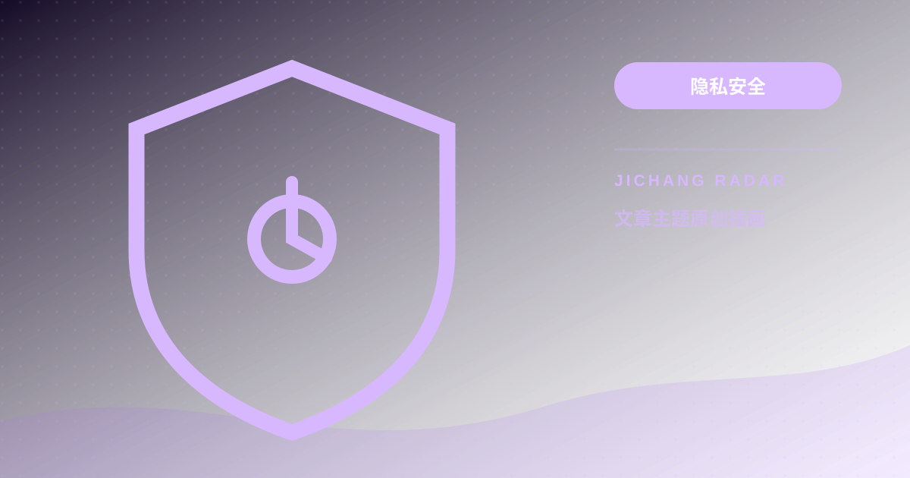

节点隐私安全与零日志审计（No-Logs）选型：如何防范服务商数据记录与泄露
深度揭秘网络节点服务商后端的真实窥探能力，解析纯内存服务器架构（RAM-Only）与透明无日志审计的底层技术防线。对比分析无日志节点与普通商用机房的数据留存差异，提供识别假零日志与防范数据记录泄露的实操选型指南。

网络加速工具绝非天然“隐形斗篷”。尽管 HTTPS 保障正文加密，但节点后端依然可截获真实公网 IP、访问域名（SNI 与 DNS 查询）、连接时序及流量指纹。防范泄露的工业基准是“纯内存架构（RAM-Only）”搭配第三方审计的无日志（No-Logs）体系：系统完全装载于易失性 RAM，禁用磁盘写盘，断电或重启时所有临时缓存数据在物理层彻底消亡。
+-------------------------------------------------------------------------+
| 持久化存储机房 vs RAM-Only 纯内存无日志审计模型 |
+-------------------------------------------------------------------------+
[普通商业节点]: 用户流量 ---> [Linux核心网络审计] ---> [持久化磁盘SSD/HDD] ---> [数据保留与泄露隐患]
(syslog / conntrack / access.log)
[零日志内存节点]: 用户流量 ---> [易失性系统内存 (RAM)] ---> [实时无状态转发] ---> [外部互联网目标]
|
(强行剥离持久化写盘)
v
[断电/软硬件重启 -> 物理数据归零]
+-------------------------------------------------------------------------+节点后端的窥探能力：服务商在服务器上究竟能看到什么
探讨“科学上网隐私安全选型”前，必须在密码学与网络层界定服务商的权力边界。
设备通过节点连接目标网站时，服务商处于中间人位置，能力划分为两道清晰界限：
1. 服务商“无法直接看到”的内容
目标网站若启用标准 TLS/HTTPS 加密，客户端与目标站协商对称密钥（如 AES-256-GCM）。节点无法解密用户提交的密码、表单或聊天明文。2. 服务商“能够轻易截获”的内容
通信元数据（Metadata）在传输中处于半暴露状态，节点服务端可完整捕获： - 用户本地公网 IP：握手必须识别回包地址，真实 IP 暴露在入口端； - 目标访问域名：TLS 握手中 SNI 明文暴露访问目标，除非全面普及 ECH； - 时间戳与时长：精确记录连接建立与关闭完整时间线； - 流量指纹特征：通过包大小与速率特征推断出视频流、下载或文本交互。若元数据被持久化记录并与支付信息关联，用户数字轨迹便存在严重泄露风险。
纯内存服务器架构（RAM-Only）与无日志审计的技术分水岭
为杜绝元数据泄露，顶级基础设施催生了 RAM-Only（纯内存架构），这是区分“口头零日志”与“工程级零日志”的技术分水岭。
1. 传统磁盘服务器的运行隐患
普通节点系统挂载在 SSD 上，内核自动写盘：syslog 记录连接异常，conntrack 缓存并发五元组。服务器一旦遭遇扣押或拖库，恢复工具可轻松提取历史记录。2. RAM-Only 纯内存无盘架构的物理防御
真正的 RAM-Only 节点彻底剥离存储写入：通过 PXE 引导装入易失性 RAM；目录挂载为 tmpfs 封死写盘通道；断电瞬时电容放电，数据物理归零。配合第三方审计报告形成信任闭环。节点网络安全等级与日志保留机制对照表
根据服务器架构、日志控制策略与权限隔离机制，网络加速节点呈现清晰的安全等级分化：
| 安全等级 | 底层架构 | 磁盘持久化策略 | 权限隔离机制 | 潜在泄露向量 | 适用场景评级 |
|---|---|---|---|---|---|
| Tier 1: 纯内存零日志 | RAM-Only 无盘引导 | 禁用写盘，断电数据清空 | 自动化不可变架构，第三方独立审计 | 理论极低，仅极罕见硬件冷冻可能 | 高敏资产、商业跨境（A+） |
| Tier 2: 配置级无日志 | 专有云 / 配备 SSD | 重定向至 /dev/null，关日志 | 核心团队受限访问，自声明无日志 | 中低，云厂商虚拟机快照存残留 | 日常科研检索、主流影音（B+） |
| Tier 3: 普通商用机房 | 公网机房 + 境外 IDC | 默认开 syslog 记连接用于计费 | 多管理员共用账号，数据库存支付单 | 中高，数据库被拖库易导致账户关联 | 普通网页浏览、大文件下载（C） |
鉴别虚标零日志与网络层路由协同
甄别“虚标零日志”，建议遵循三项判定依据：
1. 警惕“无证据口头宣称”
服务商若仅有口头宣称而无技术细节与第三方安全机构独立审计编号，此类宣称不具公信力。2. 验证“计费统计与通信日志物理解耦”
零日志架构必须将账单系统与转发网关在拓扑上解耦，网关仅校验哈希令牌，绝不记录用户与域名的映射。3. 本地网络层路由与加密握手协同
隐私安全离不开底层网络韧性。骨干网出口拥塞或跨网结算阻断易导致握手超时降级。了解运营商底层干扰机制，可参考： 内部链接: 电信、联通、移动与广电宽带怎么挑节点？三网跨网结算与出口路由避坑指南 实现从运营商物理层到应用层隐私保护的立体协同。延伸深度 FAQ
Q1：既然 HTTPS 流量已经端到端加密，为什么服务商记录访问域名依然属于高危隐私泄露？
域名与时间戳构成了精准“行为画像”。虽无法直接读取正文，但若深夜频繁连接医疗咨询、加密金融或跨境协作平台，结合 IP 属地与时序关联，能高概率推导职业、资产与社交网络，导致行为隐私实质性暴露。
Q2：如果服务商机房遭遇物理查封或黑客入侵，RAM-Only 内存节点如何真正保障浏览记录安全？
硬盘服务器即便关机，读取磁盘镜像仍可恢复历史数据。而 RAM-Only 内存节点断电拔线瞬间，电容几十毫秒内放电完毕，DRAM 数据物理级蒸发，任何硬件取证手段都无法还原消亡比特。
Q3：自己购买海外 VPS 搭建节点，与通过第三方商业零日志节点出海，哪个隐私安全性更高？
自建 VPS 管理权归个人独享，但短板是“孤岛效应”：IP 为个人独占且常绑定信用卡实名购买，云厂商底层记录绑卡人。相比之下，经审计的多租户零日志节点成千上万用户共用出口 IP，具备更强“群体匿名性”，更难被精准溯源。
---
*技术客观选型建议：破除单一营销话术，根据底层物理存储与网络协议标准客观选配加速工具，可系统性查阅：*
内部链接: 全场景节点与加速方案综合选型与技术指南
请遵守所在地法律法规、单位网络政策和第三方服务条款。本文只提供一般技术信息，不构成法律意见，也不提供节点或绕过授权的服务。